Miami
Miami is one of the largest cities of the United States. It's valued primarily for its resort stuff like warm beaches, top-service restaurants, and 5-star hotels.
Population
Races
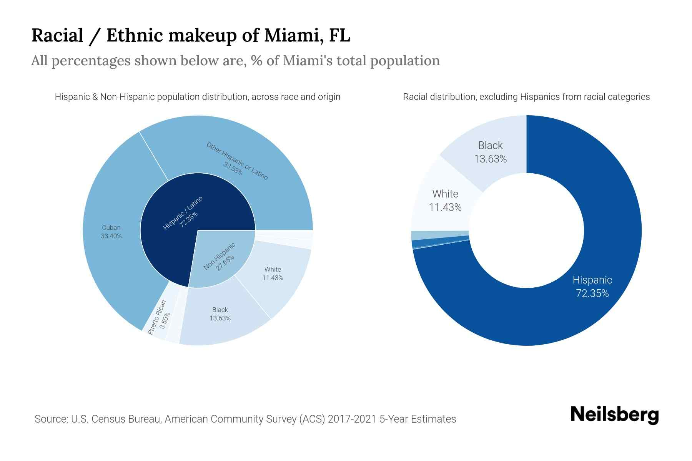
Despite the city being large enough, Miami has just half a million residents. According to the pie chart made by Neilsberg from 2017 to 2021, 72% of Miami's population is Hispanic, 14% - Black, and 13% is White. The two most likely reasons for such a huge percentage of Hispanics is the climate, for which the people of Hispanic origin are better adapted than everyone else, and, of course, the history. In 1819, the United States had bought the Florida (including Miami) from the Spanish Empire. Despite the continuous Americanization and the Great Migration that happened the next century, many residents preferred to remain here and retain many of their traditions.
According to the left pie chart, almost half of all Hispanics are Cubans, which is because Miami is very close to Cuba (about 300km or 200 miles), and Cubans can easily get US citizenship by just living in US for 1 year.
Age & Gender
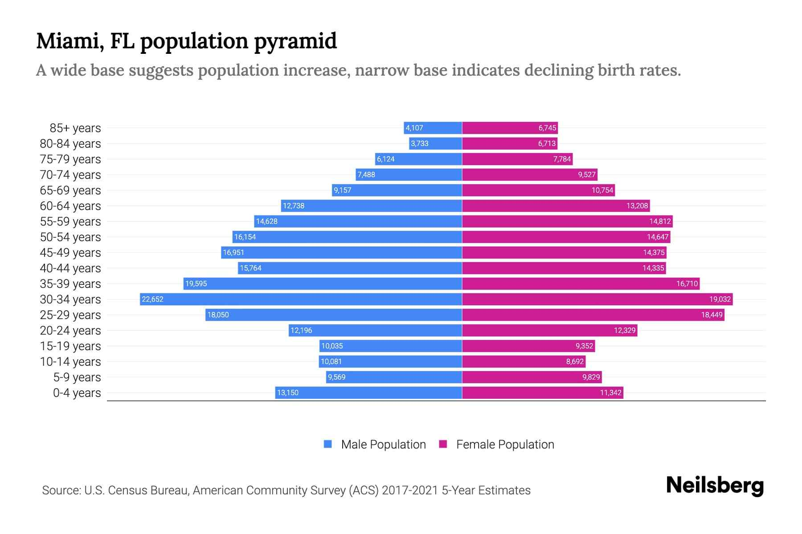
According to this graph, the city has a classic picture: more females across the elder people, lots of middle-aged people (30s and 40s), and a small amount of young people. But if we look at the numbers of people of specific age and gender by opening the image in the new tab, then we may notice something. For example, there are more males than females in all groups of people that are 19 years old and younger. Nowadays, it may have little to no impact, but in the future, most likely 10 years, this gender imbalance can create both social and economic problems that will be hard to ignore.
Geography
Map location
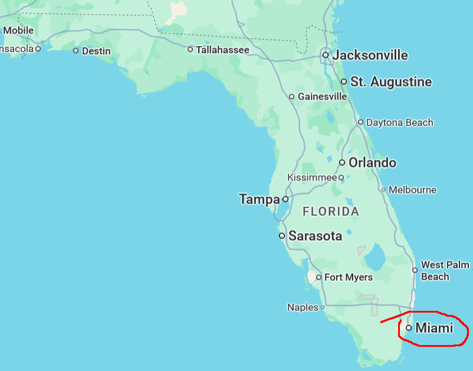
The city is located in the southeast part of Florida and has a coast going to the Atlantic Ocean, making the city associated with beaches reasonable.
City map
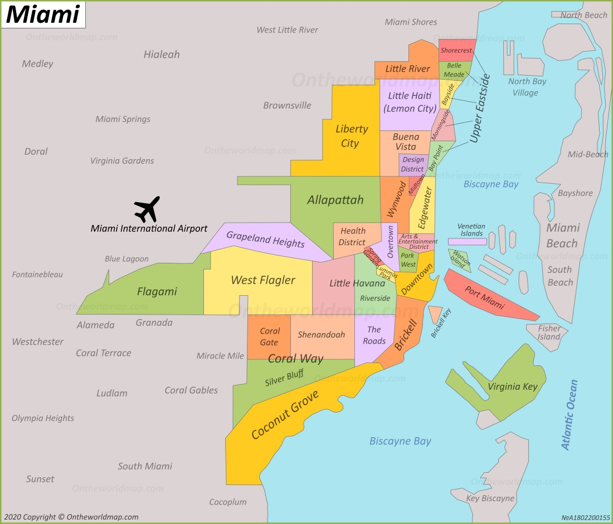
Since Miami has a very long coast and, once again, relies heavily on tourists, it has a huge collection of beaches, hotels, and restaurants. The local airport is located outside of the city's area, which is common and especially natural for Miami because it often needs a lot of space and constantly has to expand. Along with that, Miami has a port (red thin island) that is outside of the city's mainland but still close to the downtown.
History
Early history
For about 2000 years, the modern-day Miami was populated by a Native American tribe known as Tequesta. There was nothing special in their life, until the Europeans' coming. In 1566, Spanish admiral and explorer, or just conquistador, Pedro Menendez de Aviles claimed this area for Spanish Empire. Given the name of Florida, this colony was ruled by Spain for a while. However, Spain gradually lost its power, which ended up in selling Florida in 1821 to a young for that time country - the United States.
City's birth
For a long time, Florida had nothing unique compared to the other states. But it didn't last forever. In 1890s, Miami was founded. One interesting fact is that when it was incorporated as a city, there were only 300 residents. What is more interesting is that its farther development was heavily influenced by the migrant labor, most of whom came from the Carribean countries. This way, the city was not just populated by a lot of migrants but also gained a multicultural identity. Along with that, the economy was based on seasonal tourism, which is why Miami (and maybe Florida overall) is associated with beaches. However, it had a serious drawback: the income inequality that somehow existed despite its active economic growth.
20th century
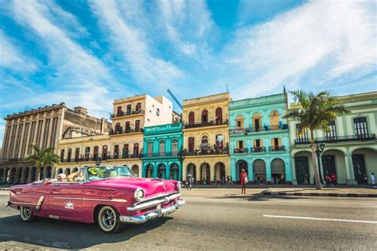
Unfortunately, when there was a well-known Great Gepression in 1929 and WWII shortly after, Miami was impacted too, slowing its development. But good news were there too: during WWII, the city became a base for US defense against Nazi German submarines, contributing to the continuation of city's population growth.
After WWII, Miami kept experiecing different things. In 1959, when the Cold War was at the peak of its tension, there was a Cuban Revolution led by Fidel Castro. Consequently, many Cubans sought a refuge. Miami, considering its climate, economics, and demographics, was one of the best choices. This way, most Cubans fled there, boosting its population once again. But population boosts weren't the only thing that made Miami so great. Even though Miami was still mostly a touristic city, its economic, educational, and social power kept growing too. Meanwhile, in terms of politics, Miami remained neutral. For example, in 1972, both Democrats and Republicans had their own national conventions.
All the way to the nowadays, the city retained its "face", despite things like dot-com boom in late 1990s-early 2000s, world crisis in 2008, and COVID-19.
Climate
Climate zone
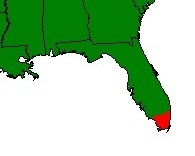
Unlike the rest of the Florida and even the neighboring states, Miami is in the tropical climate zone.
Temperature
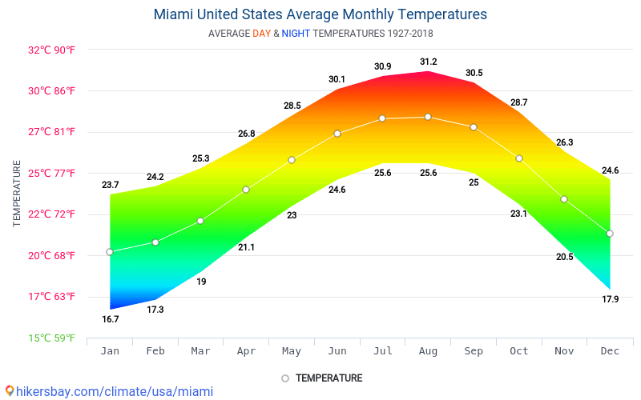
The average annual temperature in Miami is 76°F (25°C), fluctuating from 63°F (17°C) in January to 88°F (31°C) in August. On one hand, it makes beaches accessible for longer periods and winter milder, but on the other hand, it makes summers hard to handle, especially for those who came from the colder regions.
Weather
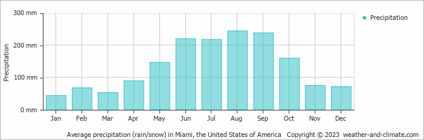
Since Miami is in tropical climate zone, the cloudy and rainy days there are rare but intense. So, the average Miami's precipitation is 1200mm per year, with August having most of them (300mm).
Wages & Prices
Minimum wage
As of 2026, the legal minimum wage in Florida is 14$/hour, which is 15-20% less than the highest ones, but still almost double the federal minimum wage, which is 7.25$. Thanks to a constitutional amendment passed by voters in 2020, it's expected to increase to 15$/hour in September 30, 2026.
Rent
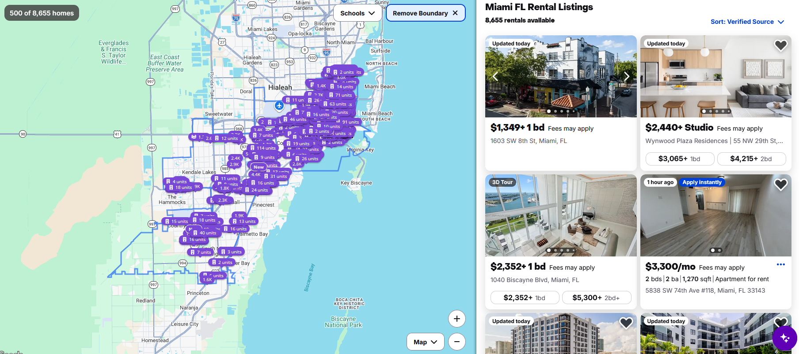
Since many of Miami's aparts look well-designed, have lots of the top-quality services nearby, and have a great outlook near the ocean, living there can seem wonderful. But because of the high demand, the main reason of which is the city being the "capital" of beaches, their prices are very high, which may become a red flag for those who wants to move somewhere but doesn't earn well.
Food
Despite that Miami is a large city, the local prices of most of the food products are lower than the average of the United States. According to the data from the hikersbay.com, the meal in a cheap restaurant costs 15$ (12$ if it's fast food restaurant), espresso coffee - 2.50$, and a bottle of water - 1.50$. The basic food products from the grocery stores have similar situation: a liter of milk is 1.20$, a kilogram of yellow cheese - 13$, and a kilogram of sausage or cold nuts - 24$. This way, people who can afford one of the local aparts can both save money on food and still enjoy its top quality.
Transportation
Highways
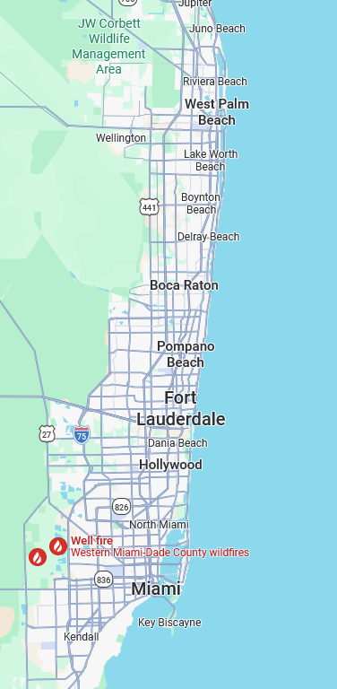
Classically for all large cities, also known as megapolises, it has a huge "web" of roads. However, because most of the city is located alongside the coast and is located at the "corner" of Florida, it doesn't have much of its own highways and is connected to only 2 interstate highways: 75, starting west from the Fort Lauderdale and heading to the West, and 95, starting near the West Palm Beach and leading to the North.
Bus routes
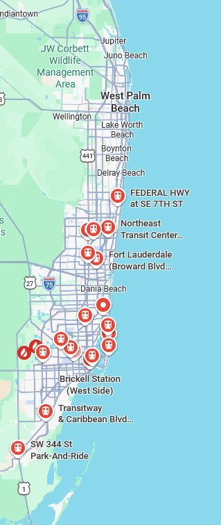
As we can see on the map, the Miami has lots of bus stops literally everywhere except the West Palm Beach and most of the adjacent districts. It's obvious that the residents of this region have to use their own cars, or, if they don't have it, ride a bike, but considering both the local prices and the climate, riding or/and saving for almost any kind of private transport may be very hard to do.
Subways
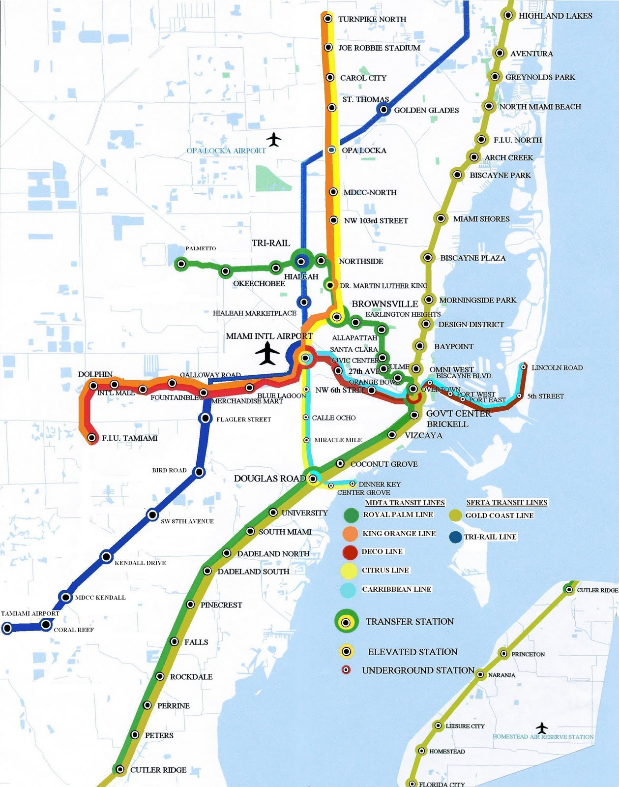
Compared to New York's subway net, Miami's one is much smaller. However, there are 3 of them near the airport that have transfer stations with the other ones that spread out in different directions, which is a great advantage for tourists, and the one going across the entire coast, which can be great for those who just wants to travel or go to another beach without getting exhausting with transportation.